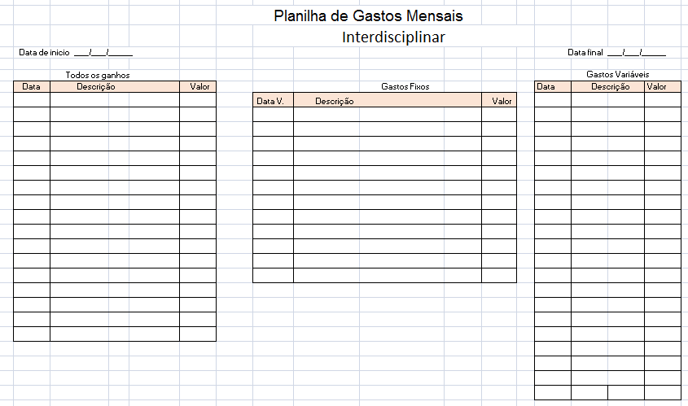

Imagem Meramente Ilustrativa
Disciplina e Persistência
Importante ferramenta que permite aos indivíduos administrarem suas finanças de formar mais
organizada e sustentável . Os principais objetivos desse planejamento é fazer com que as pessoas
tenham condições de suprir as necessidades básicas do dia a dia e alcançar metas e objetivos. De
início, medidas devem ser tomadas para que o planjamento financeiro desenvolva-se com sucesso:
- 1º faça um planejamento de receitas e despesas:
- 2º Cortar gastos superfalos e monitorar despesa;
- 3º Caso haja dívidas atrasadas, pagar o mais rápido possível;
- 4º Fazer uma reserva de emergência;
- 5º Prepare-se para investir.

Para que esse planejamento. ocorra é necessário. disciplina e persistencia, então, não deixe que isso vos falte.